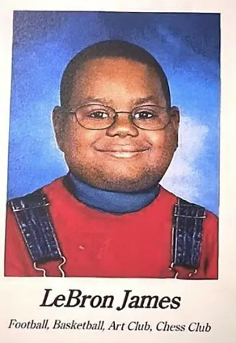

Physical Info
LeBron James was born on December 30, 1984, in Akron, Ohio. His early life was challenging—his mother, Gloria Marie James, raised him alone after his father, Anthony McClelland, was absent due to a troubled past. To provide him with stability, Gloria allowed LeBron to live with Frank Walker, a local youth football coach, who introduced him to organized basketball at the age of nine.
LeBron quickly became a basketball prodigy, playing for the Northeast Ohio Shooting Stars in the Amateur Athletic Union (AAU) league. His talent led him to attend St. Vincent–St. Mary High School, where he dominated the court and won three state championships in four years. By his senior year, he was already a nationally recognized player, earning the title Ohio’s Mr. Basketball three times from 2001 to 2003.
His high school success propelled him directly into the NBA, skipping college to be selected as the first overall pick in the 2003 NBA Draft by the Cleveland Cavaliers. From there, his legendary career took off, cementing his status as one of the greatest basketball players of all time.
